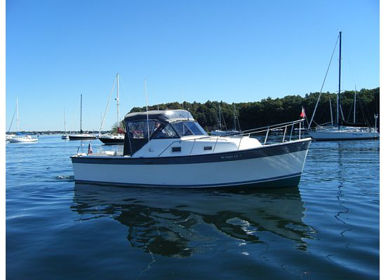

B-Scout Boat Guide · LUHR-30
Luhrs 30 Alura Downeast-Profile Fishing Cruiser
1987–1990
The Luhrs 30 Alura is a production coastal cruiser emphasizing interior volume, straightforward twin-engine propulsion and accessible used-market pricing. Layout and machinery vary by model, so individual configuration and condition remain important purchase factors.

- Length
- 30 ft
- Beam
- 10.25 ft
- Draft
- 2.92 ft
- Hull behaviour
- Semi-Displacement
- Fuel
- Gasoline
- Propulsion
- Sterndrive
- Engine configuration
- Single gasoline inboard
- Boat family
- Downeast
- Construction
- Fiberglass
Best for
- Inland and coastal cruising
- Buyers prioritizing space and value
- Owners comfortable maintaining older production systems
Trade-offs
- Operating cost reflects twin-engine planing performance
- Model-year changes can materially alter layout and systems
- Older examples require close survey attention to structure, tanks, wiring and machinery
Known concerns
- No model-specific concern has been promoted to B-Scout’s evidence threshold. This does not mean the model has no age-, condition- or hull-specific risks.
Inspection focus
- Verify moisture around deck hardware, windows, hatches and rail bases
- Inspect fuel, water and waste tanks plus hoses and fittings
- Inspect engines, transmissions or sterndrives, exhaust and cooling systems
- Review AC/DC wiring, shore-power equipment and documented electrical modifications
- Confirm steering, trim-tab and generator operation where fitted
Continue researching
Related boat models
Albin 28 Tournament Express Engine Box
29.92 ft · Planing
Albin 28 Tournament Express Flush Deck
29.92 ft · Planing
Back Cove 29 Downeast Cruiser
29.5 ft · Semi-Displacement
Hunt Yachts Surfhunter 29 Deep-V Express Cruiser
29.33 ft · Planing
Duffy 29 Downeast Hull
29 ft · Semi-Displacement
Duffy 31 Downeast / Lobsterboat Hull
31 ft · Semi-Displacement
About this record
B-Scout preserves uncertainty: missing information remains unknown rather than being treated as a negative. Specifications and guidance describe the model record; individual boats can differ by year, equipment, refit and condition.